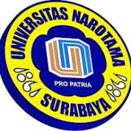

|  | SEJARAH SINGKATUNIVERSITAS NAROTAMA |
|||
|
Pada tanggal 20 Februari 1981 didirikanlah Yayasan Pawiyatan Gita Patria sebagai Hukum Pembina PTS yang didirikan dengan akta notaris R. Soebiono No. 167. Yayasan ini kemudian mendirikan PTS yang diberi nama Universitas Narotama. Susunan pengurus Yayasan terakhir diubah dengan akta notaris no. 2, tanggal 10 Mei 2002. Nama Narotama diambil dari nama seorang tokoh sejarah Mahapatih dari Prabu yang sekaligus juga sebagai guru ilmu kenegaraan serta guru agama dan ilmu kedigdayaan. Jadi tepat kiranya Universitas Narotama mengambil nama guru Prabu Airlangga karena para pendiri pengelolanya mempunyai tujuan dan cita-cita yang sama dengan pendiri Universitas yang telah ada sebelumnya.
Universitas Narotama (UNNAR) di dalam perjalanan hingga waktu saat ini
telah berusia 30 tahun dan memiliki 4 fakultas dengan 8 program studi
yang terdiri dari program Sarjana(S1) dan program Pascasarjana (S2).
Universitas Narotama (Surabaya) atau biasa disingkat
UNNAR adalah PTS yang saat ini beralamat di
Jl. Arief Rahman Hakim No. 51 Surabaya.
|
|||
| Copyright 2020 | ||||